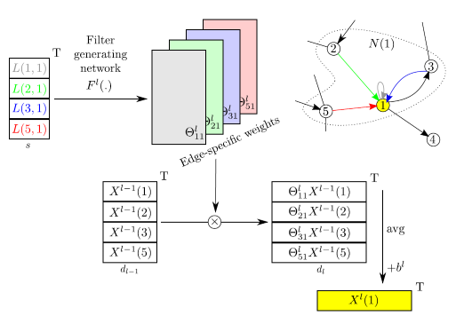
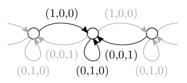
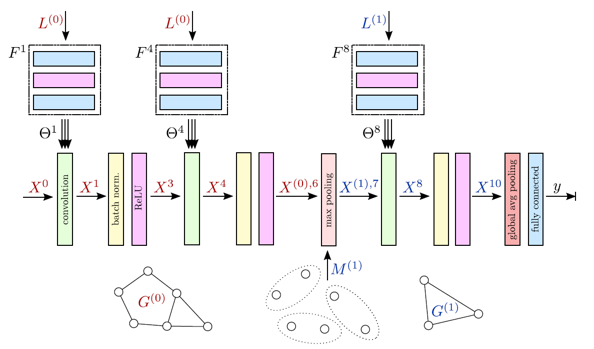
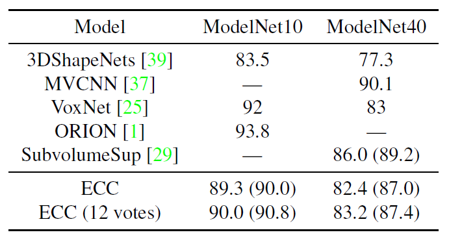
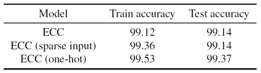

Dynamic Edge-Conditioned Filters in Convolutional Neural Networks on Graphs 리뷰
오늘 소개드릴 논문은 ENPC에서 2017년 CVPR에 발표한 Dynamic edge-conditioned filters in convolutional neural networks on graphs 논문에 대한 리뷰입니다.
이 논문은 Point cloud 등의 graph 구조로 표현 가능한 데이터에서 convolution 형태의 연산을 통해 feature vector를 추출하는 하나의 방법에 대해 제시하고 있습니다.
그럼 시작하겠습니다!
Graph Convolution
Convolution(합성곱) 연산은 2D image에 대한 내재된 feature 벡터를 잘 추출해줌으로써 classification, segmentation 등의 여러 task들에 대한 성능을 폭발적으로 끌어올렸습니다. 학계에서는 2D image 등의 Uclidian 공간에 대한 데이터 뿐만 아니라 graph 등 non-Uclidian 공간 상의 데이터도 convolution 연산을 통해 처리할 수 있지 않을까에 대해 많이 고민했습니다.
이러한 고민의 결과로 인접한 node 간의 특징 벡터를 모아주는 graph convolution 연산을 발견하였고, 이는 graph 형태로 표현 가능한 3D modeling, biological molecule, social network 등의 데이터에 활용되었습니다. 하지만 기존의 방법대로는 한 점과 인접한 점들의 feature 벡터를 균일하게(homogeneous) 더해줄 수 밖에 없었고, 이는 점들 간의 연관성의 정도를 전혀 고려하지 않은 연산이었습니다. (일반적인 discrete convolution으로 생각해보면, uniform function만을 filter로 사용하는 형태였습니다.)
이를 보완하기 위해 논문에서는 점과 점을 연결한 edge에 점들 간의 관계를 나타내는 label을 부여해서 weight parameter처럼 활용하였습니다. 이렇게 edge label을 이용하여 graph convolution을 하게 되면, 단순히 점들을 homogeneous하게 더하는 것이 아니라 점들 간의 연관성을 고려하여 더해주기 때문에 주변 점들과의 관계가 반영된 feature 벡터를 추출할 수 있다고 합니다. 또한 이 feature vector를 이용해서 graph 또는 vertex 단위로 classification을 했을 때 점들의 관계 및 분포에 대한 정보가 녹아있어 정확도가 향상되었다고 합니다. 본문에서는 이렇게 edge label을 이용한 convolution 연산을 edge-conditioned convolution(ECC)라고 부릅니다.
Point cloud
Point cloud는 3D 물체를 표현하기 위한 형식 중의 하나입니다. 원래 point cloud는 일정한 형식이 없는 집합 형태의 데이터이기 때문에 neural network의 input으로 활용하기 어려웠습니다. 하지만 특정 점에 대해 정의된 거리(r) 내에 있는 점들 중 K-nearest neighbors 알고리즘을 적용해서 인접한 점들을 찾은 뒤, 서로 연결해서 graph 형태로 변환하게 되면 graph convolution을 적용할 수 있습니다. 따라서 논문에서는 여러 종류의 graph 데이터들 중 주로 point cloud를 graph로 변환한 데이터를 활용했습니다. Point cloud는 물체나 풍경을 3D로 표현했다는 특성상 graph 또는 vertex 단위로 label이 존재하기 때문에 graph convolution의 성능을 측정하기에 적절하기도 합니다. 또한 최근에는 RGB-D 카메라나 LiDaR의 출력 형식으로 사용되기 때문에 범용적이기도 합니다.
Edge-conditioned Convolution (ECC)
 Edge-conditioned convolution 연산 과정은 그리 어렵지 않습니다. Point cloud 데이터를 graph 형태로 변환하여 n개의 node와 m개의 edge를 얻었다고 가정하겠습니다. 이 때 node의 feature vector가 l 차원, edge의 feature vector가 s 차원이라고 하면 우리는 edge의 feature vector로부터 node feature vector의 transformation matrix (lxl 차원)를 얻는 미분 가능한 함수를 정의하고자 합니다. 논문에서는 가장 간단한 multi-layer perceptron을 활용하였는데, input이 s차원 & output이 lxl 차원인 linear layer입니다. 이렇게 각 node마다 lxl 차원의 “edge-specific weights”를 얻을 수 있고, 이는 edge feature vector에서 추출한 행렬이기 때문에 점들 사이의 관계를 담고 있습니다. 이렇게 얻은 weight을 이웃한 각 node feature vector에 곱해주고 normalize하면 edge-conditioned convolution을 거친 해당 점의 feature vector를 얻을 수 있습니다.  각 edge feature vector를 순서에 맞는 one-hot vector로 설정하면 edge-conditioned convolution 연산은 uniform function에 대한 convolution과 같아집니다. 위의 그림에서 ECC는 filter size가 3인 1차원의 discrete convolution과 정확히 같아지는 것을 확인할 수 있습니다. ECC의 특징 중의 하나가 multi-hop convolution이 불가능하다는 점입니다. 다른 graph convolution 연산의 경우에는 인접 행렬을 여러번 곱해서 multi-hop의 범위를 가지는 node에 대해서도 feature aggregation을 할 수가 있지만, ECC는 인접 행렬을 이용하지 않기 때문에 multi-hop 연산이 불가능합니다. 하지만 저자는 일반적인 2D convolution에서도 크기가 큰 filter를 이용하는 것보다 3x3 크기의 filter를 여러개 이어붙이는 것이 더 좋은 feature를 추출하기 때문에 ECC layer도 여러번 반복하면 multi-hop convolution보다 좋은 성능을 낼 것이라고 이야기합니다. ECC layer의 끝에는 다른 convolution layer와 마찬가지로 batch normalization layer를 붙여주어 학습을 효율적으로 진행할 수 있게 하였습니다.
Deep network with ECC
 ECC 연산을 통해 2D image data에 대한 neural network와 비슷한 구조를 graph 구조에 대해서도 구현할 수 있습니다. 위 그림은 ECC를 이용한 convolution layer와 graph-pooling 및 coarsening 과정을 이용한 pooling layer를 이어붙여 deep neural network를 구현한 그림입니다.
- Graph pooling & coarsening ECC는 nearest neighborhood를 통해 정의된 그래프의 구조를 그대로 유지한 결과를 출력합니다. 하지만 classification task의 출력 형식인 C(number of class)차원의 출력 벡터를 얻기 위해서는 graph의 크기를 줄여서 node feature을 합쳐주어야 합니다. Graph의 크기를 줄이는 과정을 graph coarsening, node feature를 합치는 과정을 graph pooling이라고 부릅니다. Coarsening을 반복하게 되면 결국에는 서로 연결되지 않은 몇 개의 node들만 남게 됩니다. 이 때 각 node들은 self-loop을 가지고 있기 때문에 여전히 graph의 형태를 띈다고 할 수 있으며 global max pooling 등의 과정을 통해 마지막 남은 feature vector를 합쳐줄 수 있습니다.
Graph coarsening에는 다양한 알고리즘들이 활용될 수 있는데, 논문에서는 특정한 resolution을 가지는 3차원의 grid를 생성해서 해당 grid 안의 점들을 하나로 모아주는 VoxelGrid 알고리즘을 이용했습니다. 합쳐진 점들에 대해서는 다시 nearest neighbor을 통해 graph로 변환해줍니다.
-
Edge label Edge label은 해당 edge와 연결된 두 vertex 좌표값의 차이로 설정했습니다. Cartesian 및 Spherical coordinate으로 변환하여 총 6차원의 edge feature vector를 활용하였습니다.
-
Data Augmentation 학습할 때에는 dataset의 규모가 크지 않기 때문에 여러 방법으로 augmentation을 하여 overfitting을 방지하였습니다. 논문에서는 point cloud를 임의로 회전시키거나, 크기를 변화시키거나, 특정 축으로 대칭시키거나, 몇개의 점을 지우는 등의 방법을 통해 데이터 다양성을 확보했다고 주장합니다.
Experiments
ECC는 다양한 형태의 point cloud 및 graph classification 실험을 통해 성능을 보여주었습니다. 오늘은 대표적으로 ModelNet 데이터셋과 MNIST 데이터셋을 활용한 실험을 소개하겠습니다.
-
ModelNet  ModelNet 데이터셋은 물체에 대한 3D Mesh 형태의 데이터입니다. 카테고리 개수에 따라 ModelNet10과 ModelNet40으로 구분되며 각각 4000개, 10000개 정도의 학습 데이터가 존재합니다. 논문에서는 Mesh 형태의 데이터의 표면에서 uniform하게 1000개씩의 point를 sampling하여 point cloud 형태로 변환해주었습니다. 신경망 구조는 ECC(16)-ECC(32)-MP(2.5/32,7.5/32)-ECC(32)-ECC(32)-MP(7.5/32,22.5/32)-ECC(64)-GMP-FC(64)-Dropout(0.2)-FC(10 or 40) 의 형태를 이용하였고 100 epoch의 학습을 진행하였습니다. Classification에 대한 전반적인 accuracy는 SOTA만큼은 아니지만 경쟁력 있는 수준을 보여주었습니다.
-
MNIST 논문에서는 숫자에 대한 28x28 크기의 이미지 데이터셋인 MNIST 데이터셋을 이용한 성능도 측정하였습니다. 우선 ECC를 적용할 수 있게 2D image를 (x, y, 0)의 좌표를 가지는 point cloud 형태로 변환하고 nearest neighbor 알고리즘을 통해 다시 graph 형태로 변환하였습니다. 여기서는 C(16)-MP(2,3.4)-C(32)-MP(4,6.8)-C(64)-MP(8,30)-C(128)-D(0.5)-FC(10) 형태의 네트워크 구조를 활용하여 20 epoch만큼 학습을 진행하였습니다.  학습 결과는 위와 같습니다. 기존의 baseline 모델들과 비교해도 괜찮은 결과를 도출하였습니다. 또한 2D image에서 어두운 부분을 제외하고 graph 형태로 변환하여 학습을 시켜도 비슷한 결과를 도출하였습니다. 이는 graph의 형태가 바뀌어도 neural network가 학습 및 추론을 안정적으로 할 수 있다는 것을 의미합니다.
Summary
논문에서는 edge label을 처음으로 사용한 Edge-conditioned Convolution 연산을 제시하였고, 이를 활용하여 graph 형태의 데이터를 위한 feed-forward network를 구성하였습니다. 추후에 진행되는 attention 기반의 graph convolution 등의 연구의 기반이 되는 중요한 연구라고 생각합니다. 읽어주셔서 감사합니다 :)
참고 문헌 및 출처